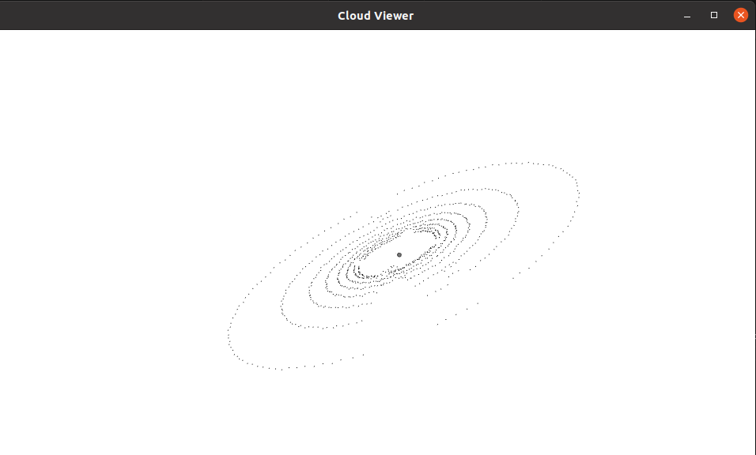

Recently I've been trying to learn about sensor fusion as part of my Dual Degree project. Many of the tutorials on the same used the PCL library for certain point cloud processing operations. Thus I decided to give it a try.
I started off with copy-pasting the sample code to visualize a PCD file.
#include<pcl/visualization/cloud_viewer.h>
#include<iostream>
#include<pcl/common/io.h>
#include<pcl/io/pcd_io.h>
int user_data;
void viewerOneOff (pcl::visualization::PCLVisualizer& viewer)
{
viewer.setBackgroundColor (1.0f, 1.0, 1.0);
pcl::PointXYZ o;
o.x = 1.0;
o.y = 0;
o.z = 0;
viewer.addSphere (o, 0.25, "sphere", 0);
std::cout << "i only run once" << std::endl;
}
void viewerPsycho(pcl::visualization::PCLVisualizer& viewer)
{
static unsigned count = 0;
std::stringstream ss;
ss << "Once per viewer loop: " << count++;
viewer.removeShape("text", 0);
viewer.addText(ss.str(), 200, 300, "text", 0);
user_data++;
}
int main()
{
pcl::PointCloud<pcl::PointXYZRGBA>::Ptr cloud (new pcl::PointCloud<pcl::PointXYZRGBA>);
pcl::io::loadPCDFile("simpleHighway.pcd", *cloud);
pcl::visualization::CloudViewer viewer("Cloud Viewer");
viewer.showCloud(cloud);
viewer.runOnVisualizationThreadOnce (viewerOneOff);
viewer.runOnVisualizationThread (viewerPsycho);
while(!viewer.wasStopped())
{
user_data++;
}
return 0;
}
The build and compilation used CMake(which I was never adept at, and forget routinely after learning). As expected, I ran into some stupid error.
The CMakeLists.txt file looked like:
cmake_minimum_required(VERSION 3.5 FATAL_ERROR)
project(cloud_viewer)
find_package(PCL 1.2 REQUIRED)
include_directories(${PCL_INCLUDE_DIRS})
link_directories(${PCL_LIBRARY_DIRS})
add_definitions(${PCL_DEFINITIONS})
add_executable(cloud_viewer visualizer1.cpp)
target_link_libraries(cloud_viewer ${PCL_LIBRARIES})
On fixing that, I ran 'cmake .' in the same directory. The build ran smooth enough. Running 'make' after this threw up an error:
No such file or directory
1 | #include<plc/visualization/cloud_viewer.h>
| ^~~~~~~~~~~~~~~~~~~~~~~~~~~~~~~~~~
compilation terminated.
make[2]: *** [CMakeFiles/cloud_viewer.dir/build.make:63: CMakeFiles/cloud_viewer.dir/visualizer1.cpp.o] Error 1
make[1]: *** [CMakeFiles/Makefile2:76: CMakeFiles/cloud_viewer.dir/all] Error 2
make: *** [Makefile:84: all] Error 2
Being the idiot I am, only the next day did I realize that I had included a path with "plc" instead of "pcl".
Some Takeaways:
Well in the process I learned that the compiler searches for headers in "/usr/include/" and shared libraries are stored(atleast most of them) in "/usr/lib/x86_64-linux-gnu".
This was important as it turns out libraries like Eigen dont seem to compile for me when using the include path #include<Eigen/Dense>. I need to instead use #include</eigen3Eigen/Dense>.
Final Output:
